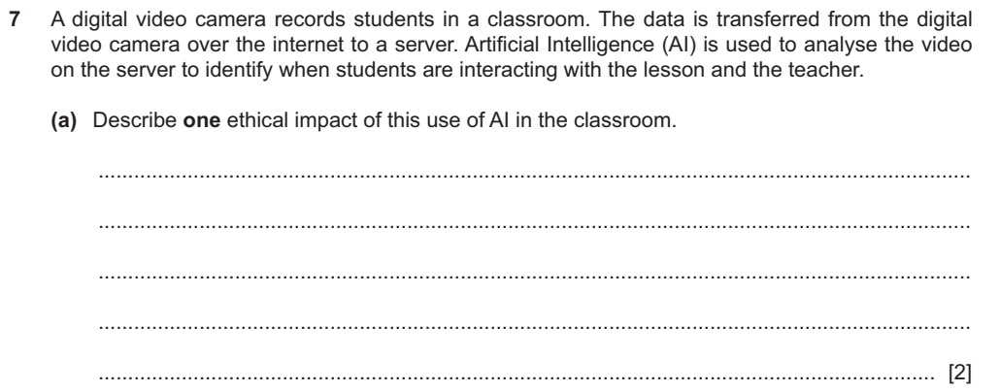
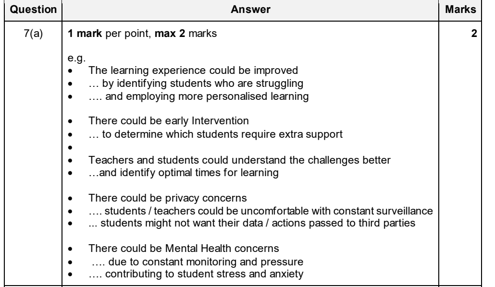
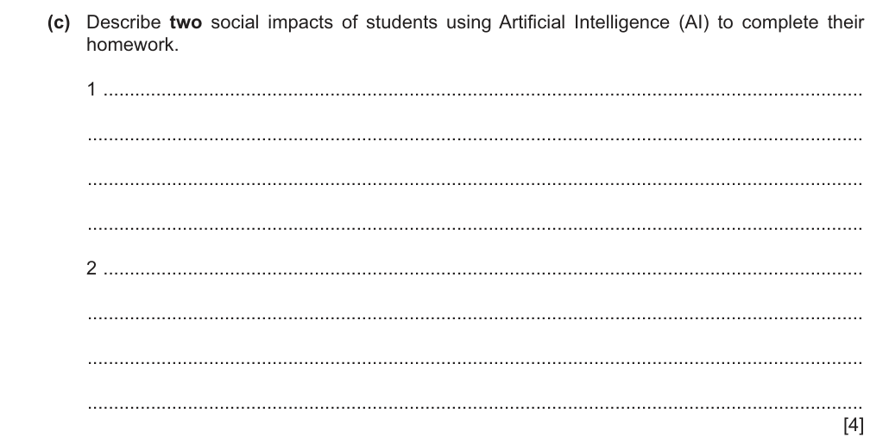
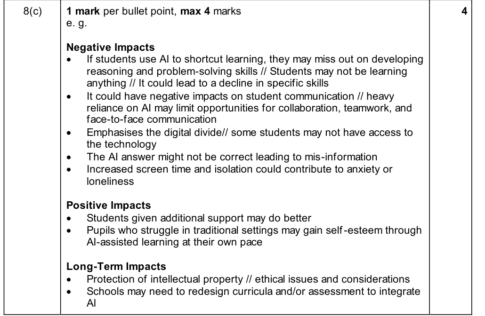
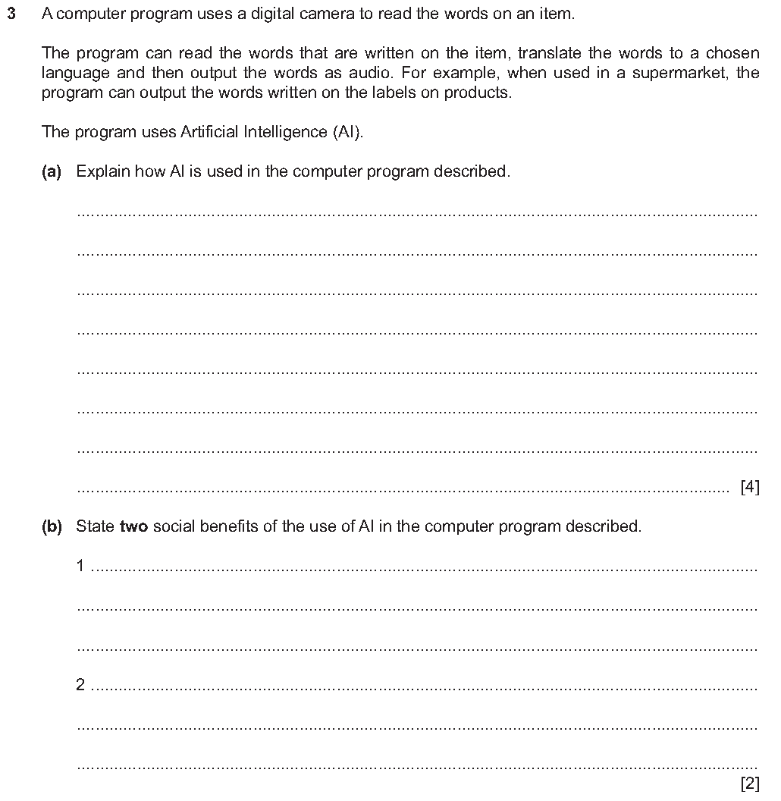
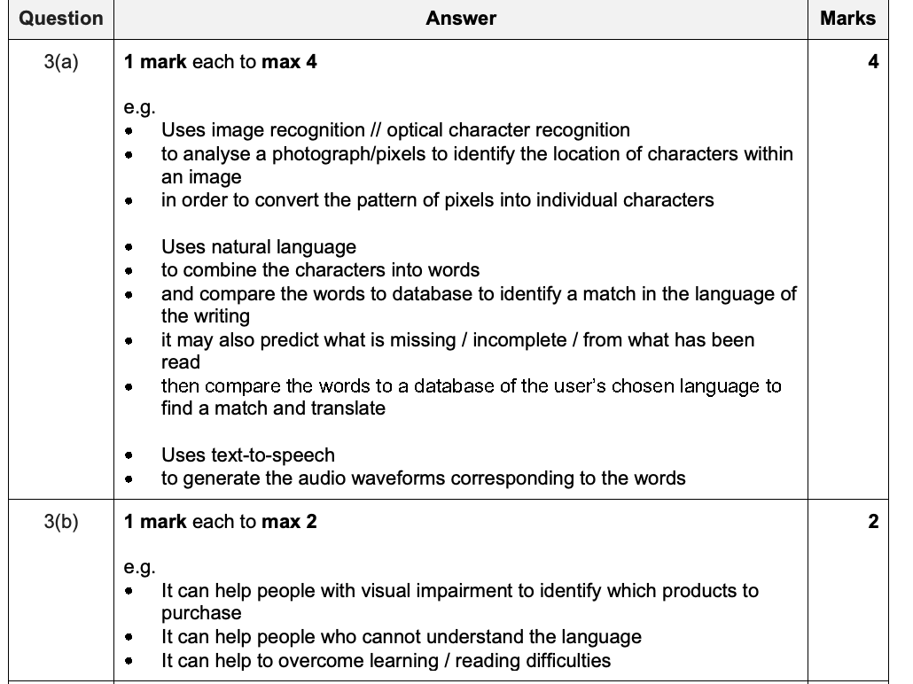

7.1.5
Artificial intelligence
What makes this an AI task?
Already supplied as text
A person types AB12.
- StoreSave the supplied characters.
- RetrieveReturn the same stored characters.
Storage alone does not demonstrate an AI task.
Interpreted from an image
A camera photographs a handwritten postcode.
- RecogniseInfer characters from pixel patterns.
- UsePropose the postcode text for sorting.
Character recognition is the intelligent task.
Teacher-written check
A machine adds two entered prices. Another recognises an item from its photograph. Which description demonstrates an AI task?
Check your reasoning
The second describes image recognition: the program infers the object from visual patterns. Adding already supplied numbers alone does not establish AI. Recognition can still be wrong.
Where does the system’s knowledge come from?
Route A · expert-written rules
- Expert knowledgeA specialist supplies facts and decision rules.
- Reasoning systemApply the rules to the current facts.
- ConclusionSuggest a fault or a next check.
Route B · learning from data
- ExamplesCollect relevant cases and suitable feedback.
- TrainingAdjust a model to patterns in those cases.
- EvaluationCheck performance on separate cases.
- UseApply the model to new inputs.
Background beyond AS Section 7 · Machine learning, deep learning, reinforcement learning, supervised/unsupervised learning and artificial neural networks are named in A Level Section 18. AS Section 7 requires understanding AI, its applications and its social, economic and environmental impacts. The learning examples here support understanding; their terminology is not an additional AS requirement.
Teacher-written check
Must every AI system learn a new rule whenever it is used?
Check your reasoning
No. A system can apply a fixed set of expert rules or use a previously trained model without changing it during that use.
Training, testing and using a trained model
Build and check a handwriting model
- Training examplesImages paired with their known characters.
- TrainingAdjust the model using its prediction errors.
- Separate test examplesCompare predictions with checked answers.
Use the model later
- New imageThe character has not been supplied to the model.
- Use the trained modelPredict a character from the new image.
- Output and checkUse or review the proposed result.
Background beyond AS Section 7 · Machine learning, deep learning, reinforcement learning, supervised/unsupervised learning and artificial neural networks are named in A Level Section 18. AS Section 7 requires understanding AI, its applications and its social, economic and environmental impacts. The learning examples here support understanding; their terminology is not an additional AS requirement.
Teacher-written check
The model recognises every training image correctly but often fails on new handwriting. What was missing from the claim that it “works perfectly”?
Check your reasoning
Performance on independent examples representative of the intended use. Memorising or fitting training cases does not establish reliable performance on new handwriting.
Name the data, the model and the two processes
| Term | Meaning in this example |
|---|---|
| Model | The learned structure and values that map an image to a proposed character. |
| Training | The process that fits or adjusts the model using examples. |
| Label | The target answer supplied with an example, such as the character 7. |
| Using the trained model | Produce an output for a new input; this need not update the model. This is often called inference in machine-learning explanations. |
Background beyond AS Section 7 · Machine learning, deep learning, reinforcement learning, supervised/unsupervised learning and artificial neural networks are named in A Level Section 18. AS Section 7 requires understanding AI, its applications and its social, economic and environmental impacts. The learning examples here support understanding; their terminology is not an additional AS requirement.
Teacher-written check
A model was trained yesterday. Today it recognises a new image without changing its fitted values. Is it being trained or used?
Check your reasoning
The existing model is being used to produce an output for a new input. Training was the earlier process that adjusted the model.
How AI, machine learning and deep learning relate
Systems performing tasks such as recognition, reasoning and prediction
Apply expert-written knowledge to supplied facts.
Learn a model from data or experience
Connected layers of computational units
Uses neural networks with multiple hidden layers
Background beyond AS Section 7 · Machine learning, deep learning, reinforcement learning, supervised/unsupervised learning and artificial neural networks are named in A Level Section 18. AS Section 7 requires understanding AI, its applications and its social, economic and environmental impacts. The learning examples here support understanding; their terminology is not an additional AS requirement.
What is an artificial neural network?
Background beyond AS Section 7 · Machine learning, deep learning, reinforcement learning, supervised/unsupervised learning and artificial neural networks are named in A Level Section 18. AS Section 7 requires understanding AI, its applications and its social, economic and environmental impacts. The learning examples here support understanding; their terminology is not an additional AS requirement.
Teacher-written check
Does using a deep neural network make a prediction certain?
Check your reasoning
No. Model structure does not guarantee a correct output. The data, training, evaluation and new operating conditions still matter.
Supervised learning · examples include target answers
- PredictThe model proposes a character for a training image.
- CompareCompare the prediction with its supplied label.
- AdjustUpdate the model, then repeat with more examples.
Later: a new handwriting image → the trained model → a predicted character.
Background beyond AS Section 7 · Machine learning, deep learning, reinforcement learning, supervised/unsupervised learning and artificial neural networks are named in A Level Section 18. AS Section 7 requires understanding AI, its applications and its social, economic and environmental impacts. The learning examples here support understanding; their terminology is not an additional AS requirement.
Teacher-written check
A training record contains a pump’s vibration readings and whether it later failed. What is the label?
Check your reasoning
Whether the pump later failed is the known target answer. The vibration readings are input features used to predict that target.
Unsupervised learning · find structure without target labels
Background beyond AS Section 7 · Machine learning, deep learning, reinforcement learning, supervised/unsupervised learning and artificial neural networks are named in A Level Section 18. AS Section 7 requires understanding AI, its applications and its social, economic and environmental impacts. The learning examples here support understanding; their terminology is not an additional AS requirement.
Teacher-written check
If each record had already been labelled “fiction-focused” or “non-fiction-focused” and the model learned to predict that label, what would change?
Check your reasoning
That would be supervised learning. In this unsupervised example, the model receives the borrowing measurements without the target group names.
Reinforcement learning · actions lead to feedback
- ObserveA simulated robot receives its location and nearby obstacles.
- ActIts current strategy selects a move.
- Environment changesThe simulation returns the new situation.
- Reward signalA number evaluates the consequence of the action.
↶ Repeat with the new observation; training improves the action-selection strategy.
Background beyond AS Section 7 · Machine learning, deep learning, reinforcement learning, supervised/unsupervised learning and artificial neural networks are named in A Level Section 18. AS Section 7 requires understanding AI, its applications and its social, economic and environmental impacts. The learning examples here support understanding; their terminology is not an additional AS requirement.
Teacher-written check
Is a reward of +10 the same as a label saying “move left”?
Check your reasoning
No. It evaluates what happened but does not directly supply the correct action for every situation. The learner must work out which action choices tend to achieve higher cumulative reward.
Compare the information used for learning
| Approach | Information available | What the learner seeks | Illustrative task |
|---|---|---|---|
| Supervised | Inputs paired with target answers | A mapping that predicts the target for new inputs | Recognise characters from labelled images |
| Unsupervised | Inputs without target labels for the task | Useful structure or groupings in the data | Group similar borrowing records |
| Reinforcement | Observations, actions and reward feedback | An action strategy with higher expected cumulative reward | Learn a route in a simulator |
Background beyond AS Section 7 · Machine learning, deep learning, reinforcement learning, supervised/unsupervised learning and artificial neural networks are named in A Level Section 18. AS Section 7 requires understanding AI, its applications and its social, economic and environmental impacts. The learning examples here support understanding; their terminology is not an additional AS requirement.
Social impacts · explain who is affected and how
| Situation | Potential benefit and its effect | Potential concern and its effect |
|---|---|---|
| AI classroom monitoring | Detect a pupil’s difficulty → the teacher can offer help earlier or adapt the lesson. | Continuous observation or shared records → pupils may lose privacy or feel anxious. |
| AI homework help | Help outside lesson time → pupils can work at their own pace and gain confidence. | Answers replace independent reasoning → pupils practise fewer problem-solving skills. |
| Access to AI homework tools | Additional explanations → some pupils gain support that was previously unavailable. | The digital divide: unequal access to devices or connectivity → existing differences in learning opportunity may widen. |
| Reliance on AI responses | Useful explanations → pupils can revisit ideas when needed. | Incorrect information accepted as fact → pupils learn misconceptions. |
Teacher-written check
Develop the point “AI homework tools can increase inequality” using the situation.
Check your reasoning
Pupils without reliable devices or internet access may receive less of the extra help available to other pupils, widening differences in learning opportunity.
Past paper · one ethical impact of classroom monitoring
Original question · Cambridge 9618/13
1. Connect classroom AI monitoring to an ethical impact
Cambridge 9618/13 · October/November 2025 · 7(a) · 2 marks
Selected parts: 7(a) [2].
Original question

Reading the question — teacher guidance
Describe one impact of the stated classroom monitoring. Name the affected people and explain how recording or analysing their behaviour could affect them. One developed impact is sufficient; the question does not require both a benefit and a drawback.
Solution / model answer — teacher-written
Continuous classroom monitoring can raise privacy concerns: students or teachers may feel uncomfortable because their actions are constantly observed and may be passed to third parties.
Official mark scheme

Why this earns marks — teacher explanation
The official scheme awards one mark per accepted point, up to two. Privacy concerns linked to constant surveillance or sharing data are accepted. It also accepts improved learning through identifying students who need support, or pressure from monitoring leading to stress or anxiety. A suitable positive impact can therefore earn credit.
This task assesses a specific social or ethical impact of AI. It does not require a technical explanation of image recognition, a calculation, or a complete comparison of two possible deployment decisions.
Common mistakes — teacher analysis
Writing only that AI is unethical does not describe its impact. Explain what happens to students or teachers; the next part of the original paper concerns video file size and is outside this selection.
Cambridge past-paper access page ↗ · Source references and page numbers are shown with each extract. © Cambridge University Press & Assessment / UCLES.
Past paper · social impacts of AI homework help
Original question · Cambridge 9618/11
2. Describe two social impacts of AI homework help
Cambridge 9618/11 · October/November 2025 · 8(c) · 4 marks
Selected parts: 8(c) [4].
Original question

Reading the question — teacher guidance
Answer part 8(c). Describe two social impacts on students and develop each in the homework context. The network-ethics part is taught separately in 7.1.2.
Solution / model answer — teacher-written
Learning support: additional AI help may improve achievement; students who struggle in traditional lessons may also gain confidence from learning at their own pace.
Social participation: heavy reliance on AI may reduce collaboration and face-to-face communication; increased screen time and isolation can contribute to anxiety or loneliness.
Official mark scheme

Why this earns marks — teacher explanation
The scheme awards one mark per accepted bullet point, up to four overall. There is no stated two-mark cap per impact and no requirement to give one benefit and one drawback. Other accepted points include reduced reasoning practice, unequal access, incorrect answers, intellectual-property concerns and changes to school assessment.
Common mistakes — teacher analysis
Describe two developed impacts, not a disconnected list of labels. Do not claim that all AI answers are wrong or that all students become isolated.
Cambridge past-paper access page ↗ · Source references and page numbers are shown with each extract. © Cambridge University Press & Assessment / UCLES.
An overall success rate can hide unequal access
Group A
90 / 90
Correct captions: 100%
Group B
5 / 10
Correct captions: 50%
Together: (90 + 5) / (90 + 10) = 95% correct
Explore an optional example · change the sample and compare group rates
Optional teacher-operated example · invented teaching data; no live AI service.
Invented caption tests: a complete caption counts as correct only when it matches its checked reference. These groups are test samples, not claims about accents.
Predict: Calculate each group’s success rate and the overall rate. Does the overall result describe both groups equally well?
Make a prediction before revealing the explanation.
Teacher-written check
Would publishing only “95% correct” show that both groups have equally usable captions?
Check your reasoning
No. The overall rate conceals the 50% rate for group B. Report and investigate the group results as well as the overall figure.
Economic impacts · useful work, jobs and total cost
Potential gains
- Predict equipment faultsPlan maintenance before a breakdown.
- Avoid disruptionReduce lost production and emergency repair costs.
New costs and changes
- Introduce AIPay for development, data, integration and operation.
- Change the workFund oversight and retraining; some tasks or jobs may disappear while others are created.
Explore an optional example · compare complete costs over time
Optional teacher-operated example · invented teaching data; no live AI service.
Invented costs for the same volume of reading-support work each month, measured in currency units. All figures below are included; other unchanged costs are excluded equally.
Predict: Include service, review, maintenance, rework and initial integration. Is the AI-assisted method cheaper over the selected period?
Make a prediction before revealing the explanation.
Teacher-written check
A business saves two hours of checking each day. Why is that not enough to prove that AI saves money?
Check your reasoning
The value of the saved work must be compared with the cost of the AI service, integration, maintenance, oversight and correcting errors. Whether staff expenditure falls also depends on how the saved time is used.
Environmental impacts · compare the footprint and the saving
Resources used by AI
- Electricity for training and using AI models
- Cooling: energy and, in some systems, water
- Hardware manufacture, materials and eventual electronic waste
Resources an application may save
- Better delivery routes can reduce vehicle fuel use
- Heating controls can reduce energy wasted in empty rooms
- Fault prediction can support repair and longer equipment use
Explore an optional example · include computing and equipment manufacture
Optional teacher-operated example · invented teaching data; no live AI service.
Invented irrigation example: both methods meet the same watering need under comparable conditions over 12 months. Electricity is measured in kWh.
Predict: Compare operating electricity first. Then include the allocated manufacturing electricity. Does your conclusion change?
Make a prediction before revealing the explanation.
Teacher-written check
An AI route planner reduces delivery fuel use. What else must be checked before claiming a net environmental benefit?
Check your reasoning
Compare the fuel saving with the planner’s operation and additional hardware over a comparable workload and period. Also identify which impacts are measured, such as emissions or energy, and what the comparison excludes.
Application · turn a photographed label into translated speech
- Camera imagePixels show the French word Sortie.
- OCRRecognise character patterns → text: Sortie.
- Natural language processingCombine characters into words and compare with stored words to identify Sortie.
- TranslationFind the matching word in the selected language: Exit.
- Text-to-speechGenerate an audio waveform for Exit.
- SpeakerTurn the output signal into audible speech.
Teacher-written check
A clear voice speaks the wrong word after OCR misreads the label. Would increasing the volume fix the fault?
Check your reasoning
No. Clear audio can carry an earlier recognition error forward. Check the recognised text against the label or capture a clearer image before translating and speaking it.
Explore an optional example · trace an OCR error through the stages
Optional teacher-operated example · invented teaching data; no live AI service.
A school reading aid photographs a French sign and reads its meaning in English. The original sign says Sortie (exit).
This is the original sign. Predict which representation passes to each stage.
- Camera
- OCR
- Natural language processing
- Translation
- Text-to-speech
Predict: Can a later stage produce a clear result from incorrect recognised text?
Make a prediction before revealing the explanation.
Connect the reading device to its social benefits
- Barrier: printed text is hard to seeThe device reads the information aloud → a visually impaired user can access it.
- Barrier: an unfamiliar languageThe device translates and speaks in the selected language → the user can understand the label.
- Barrier: difficulty reading textSpoken output can help a user with reading or learning difficulties obtain the information.
Teacher-written check
Why is “the device produces sound” not yet a developed social benefit?
Check your reasoning
It describes the output. Explain who gains access and what barrier is reduced, such as a visually impaired shopper hearing information they cannot easily read.
Past paper · explain the device and its social benefits
Original question · Cambridge 9618/12
3. Explain an AI reading and translation device
Cambridge 9618/12 · May/June 2025 · 3(a), 3(b) · 6 marks
Selected parts: 3(a) [4]; 3(b) [2].
Original question

Reading the question — teacher guidance
Follow the product’s sequence: camera image, recognised words, translation, spoken output. For social benefits, identify people helped and what they can do more easily.
Solution / model answer — teacher-written
3(a): Optical character recognition locates characters in the camera image and converts their pixel patterns into individual characters. Natural language processing combines these characters into words and compares the words with a database to identify matches in the source language. It then compares words with a database of the chosen language to find matching translations. Text-to-speech generates audio waveforms corresponding to those words.
3(b): A visually impaired shopper can hear product information that they cannot read on the label. A shopper who does not understand the label’s language can hear the information in a language they understand.
Official mark scheme

Why this earns marks — teacher explanation
Part (a) has a maximum of four marks across the accepted stages and details. Part (b) allows two social benefits; do not spend both statements repeating the same accessibility benefit.
Common mistakes — teacher analysis
“AI reads it” names no process. Recognising the characters and translating their meaning are different stages. Speed alone needs a clear social benefit in this situation.
Cambridge past-paper access page ↗ · Source references and page numbers are shown with each extract. © Cambridge University Press & Assessment / UCLES.
Explain other applications: input → AI task → output → use
| Application | Input | AI task | Output and use |
|---|---|---|---|
| Medical image review | A scan | Recognise suspicious image patterns | Flag an area for a clinician to inspect |
| Fraud detection | A new payment and transaction patterns | Detect unusual activity | Risk flag for investigation; not proof of fraud |
| Speech recognition | Recorded or live speech | Infer spoken words from audio | Text used for captions or voice input |
| Predictive maintenance | Vibration and temperature measurements | Predict an increased risk of failure | Alert used to schedule an inspection |
| Recommendations | Preferences and item information | Rank likely interests | Suggested items displayed to a user |
| Autonomous driving | Camera and other sensor readings | Interpret obstacles and the road situation | Information used to select vehicle-control actions |
Teacher-written check
A maintenance model raises a fault alert. Does that prove that the machine is broken?
Check your reasoning
No. It indicates a predicted risk or detected pattern. An inspection can check the warning; false alerts and missed faults have different consequences.
Bring the evidence together before recommending a use
| Consideration | Developed reasoning |
|---|---|
| Application | Image analysis flags scans likely to need urgent attention; clinicians still interpret the scans. |
| Social | Earlier review may help urgent patients, but missed cases or unequal performance across groups can delay care. |
| Economic | Prioritisation may make better use of specialists’ time; purchase, integration, review and correction add costs. |
| Environmental | Operation and extra hardware use resources. Any avoided repeat work needs evidence before claiming a saving. |
| Response | Check performance on relevant cases, provide review of unflagged scans and allow clinicians to override priorities. Compare the pilot with the existing queue. |
Teacher-written check
What is missing from “Use the system if it is safe”?
Check your reasoning
The response must state how safety will be checked, which harms and affected groups matter, what safeguards are feasible, and how the recommendation follows from the evidence.